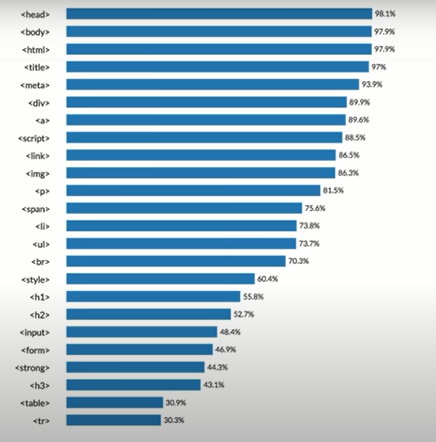

- 시작
- 생활코딩 일기
- JavaScript를 배우며
2021년 1월 3일
보이지 않았던 것이 보이기 시작했다
이솦 생활코딩에서 웹페이지 만드는 코딩을 배우는 중.
라디오 방송을 듣는 것 같은 기분
[TAG를 배워보자]
웹을 지배하는 가장 중요한 문법
인터넷을 지배하는 중요한 문법
제일 쉬운 문법이기도 한 태그TAG
'시'라고 생각을 해 보면 어떨까
태그를 이용한 웹페이지 만들기
1. ATOM 프로그램을 다운받자. atom.io
*이미지 다운받을 수 있는 곳-unsplash.com


[웹페이지 만들었으니 이제 웹사이트 구축]
웹사이트로 넘어가
info.cern.ch
[이 동영상 보기 강추!]